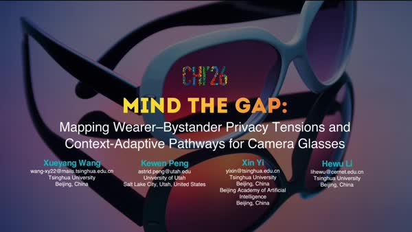
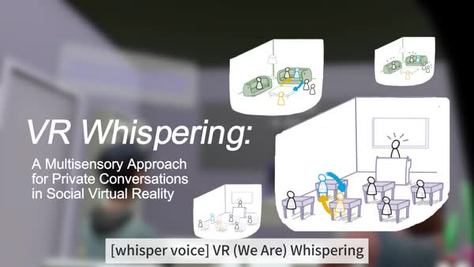
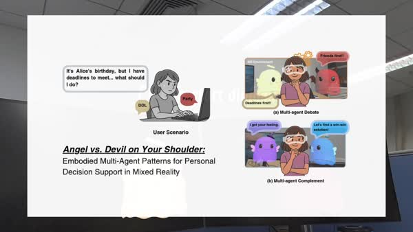
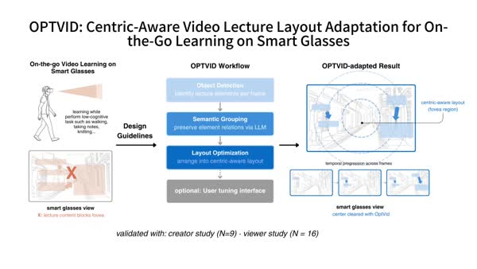
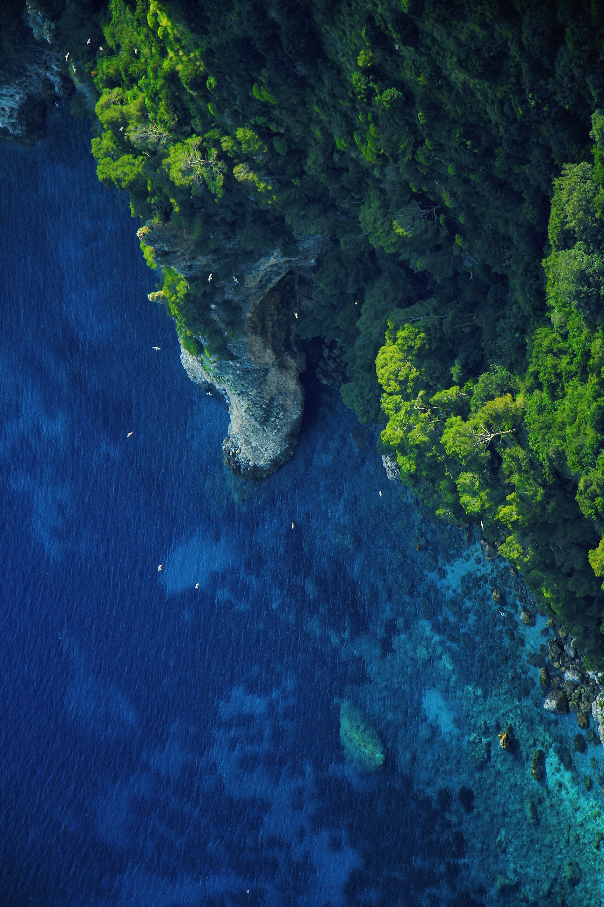
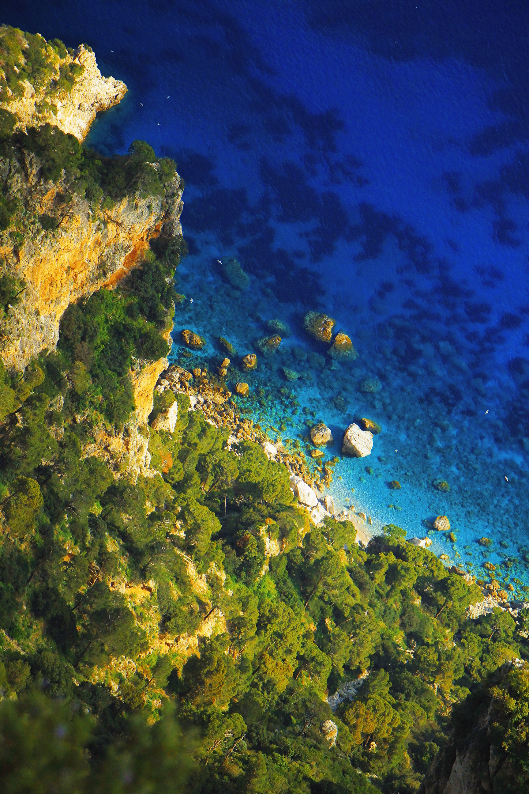
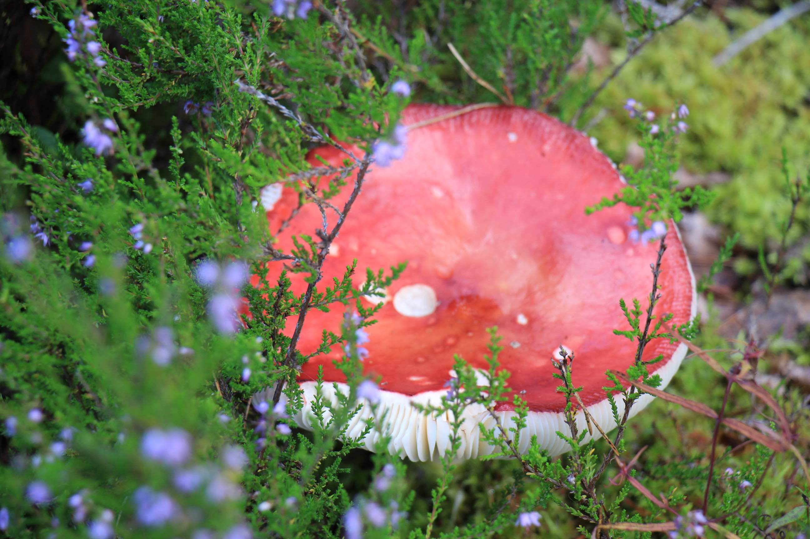
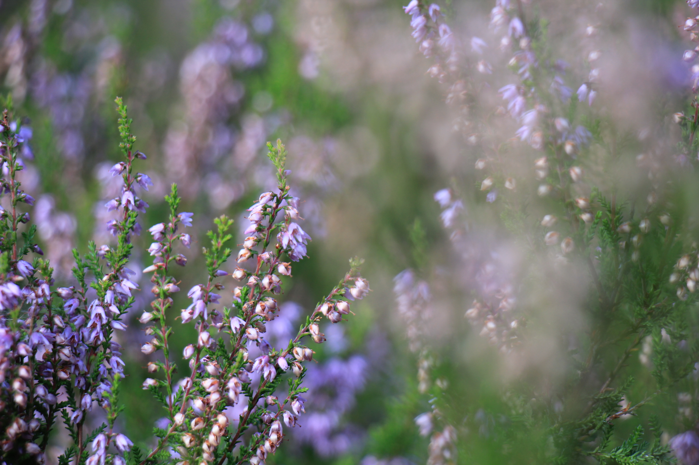
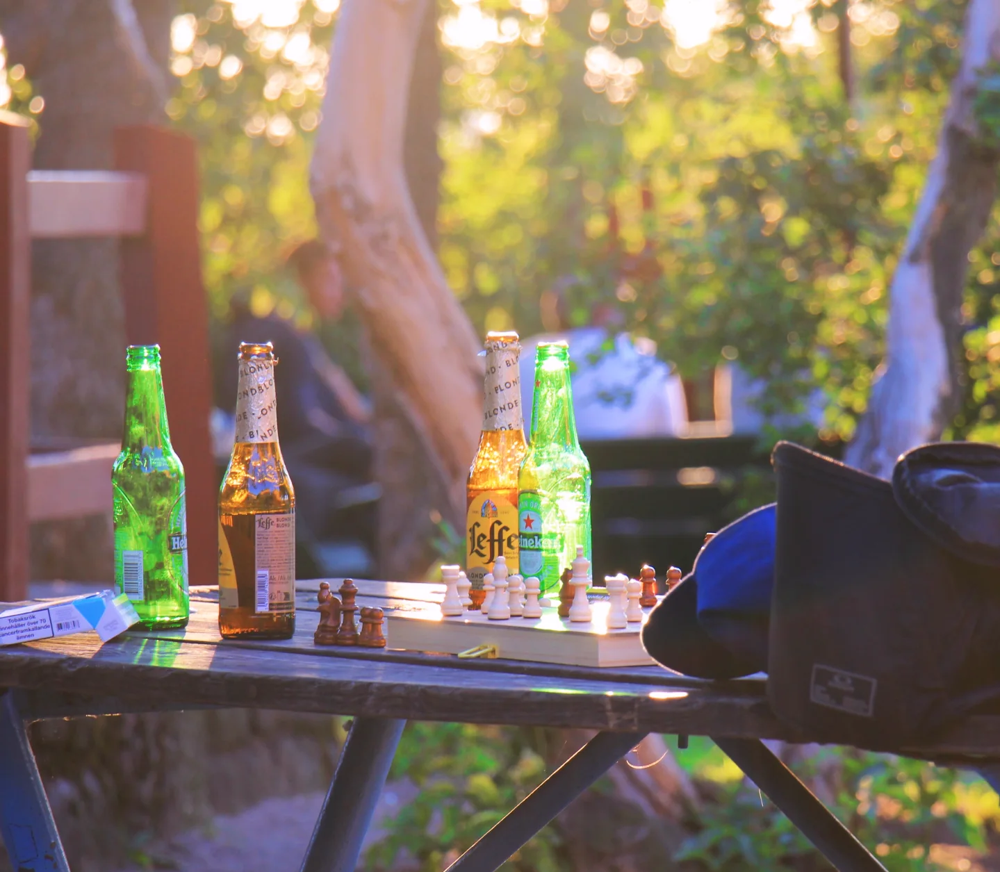

Hi! This is ASTRID.
MATHS × DESIGN × HCI
// 01
About
Kewen (Astrid) Peng
I am an (incoming) CS PhD student at the University of Utah, working at the intersection of Human-Computer Interaction, XR, and multimodal systems. Before that, I got a BS in Mathematics and a BE in Industrial Design with honor from Shanghai Jiao Tong University.
My research journey began as a RA at Tsinghua University and Aalto University. I am building toward a research agenda around multimodal interaction and extended reality, exploring how we design for humans to authentically extend their cognition and expression. Our related work has been accepted at CHI 2026 and VR 2025 (TVCG paper). At Aalto, I worked closely with Yue Jiang, who has become my PhD supervisor.
Besides, I am also interested in art. I am an amateur photographer of landscape, with experience in conference photography, e.g. UIST 2025 (SV photographer) and VR 2025 (finalist selection). I won first prizes in Shanghai City for poem writing and achieved full marks in history and geography during my high school years.
// 02
Research
I design interfaces that treat humans as minds to be extended in how they think, communicate, and perceive.

Mind the Gap: Mapping Wearer–Bystander Privacy Tensions and Context-Adaptive Pathways for Camera Glasses
Do you know if someone is recording you? A multi-stakeholder study on wearer–bystander privacy tensions in camera glasses, through surveys (N=525) and paired interviews (N=20). We contribute a diagnostic framework for context-adaptive pathways for privacy protection.

VR Whispering: A Multisensory Approach for Private Conversations in Social Virtual Reality
People do care about privacy, but how to make people feel the 'privacy'? We present Whisper, a multisensory approach combining visual, auditory, and tactile cues to recreate the feel of whispering. A comparative evaluation (N=24) show Whisper significantly outperforms existing methods in privacy, intimacy, and social presence.

Embodied User Interface Design of Human-AIs Interaction
Still texting your agents for consultation on decision making? Let them be present as your partner! We developed a multimodal interface for supporting vivid interaction with your agents, bringing nuanced face-to-face experience with your agent teams. Careful, they might debate with each other!

An Optimized Technique for Mobile Video Learning
Compared to traditional vision-centered design of video learning, we proposed a centric-aware video learning technique, bringing on-the-go video seamlessly to reality. Evaluations from both video designers and viewers reflect ease of adaptation and enhanced learning experience in the process.
// 03
Recognition & Service
// 04
Creative
Seeing is its own kind of research. I photograph the world the way I approach interfaces.




